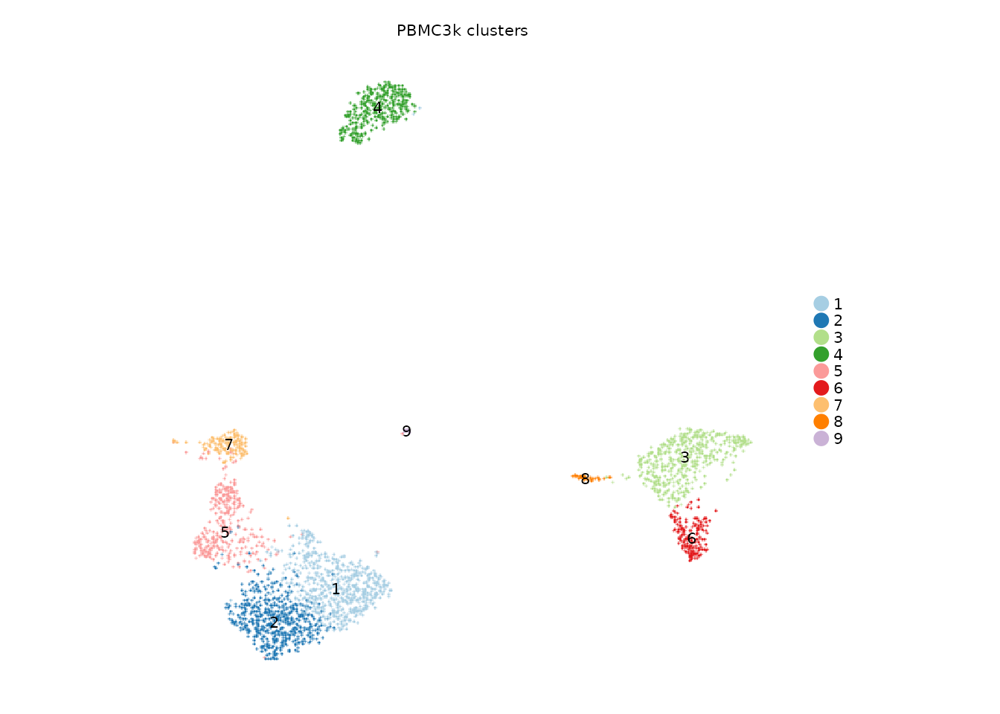

Clustering and integration with PBMC3k
Songqi Duan
duan@songqi.org Source:vignettes/clustering.Rmd
clustering.RmdSeurat teaches users a sequence of steps: normalize, find variable genes, run PCA, build neighbors, cluster, and embed. Shennong keeps that logic, but exposes it through one workflow function so the choices are visible in one call.
This article uses PBMC3k. For speed, the website shows code without
running the analysis unless
SHENNONG_RUN_VIGNETTES=true.
One function for the standard clustering path
The minimal clustering call is intentionally short. The arguments that usually matter for a report are visible: normalization method, number of features, PC range, resolution, clustering algorithm, and species.
library(Shennong)
library(Seurat)
library(dplyr)
pbmc <- sn_load_data("pbmc3k")
#> INFO [2026-05-05 21:19:00] Initializing Seurat object for project: pbmc3k.
#> INFO [2026-05-05 21:19:00] Running QC metrics for human.
#> INFO [2026-05-05 21:19:01] Seurat object initialization complete.
pbmc <- sn_run_cluster(
object = pbmc,
normalization_method = "seurat",
nfeatures = 2000,
npcs = 30,
dims = 1:20,
resolution = 0.6,
cluster_algorithm = "leiden",
species = "human",
verbose = FALSE
)
pbmc
#> An object of class Seurat
#> 54872 features across 2753 samples within 1 assay
#> Active assay: RNA (54872 features, 2000 variable features)
#> 3 layers present: counts, data, scale.data
#> 2 dimensional reductions calculated: pca, umapWhen the input already contains sn_run_cluster() stage
metadata, the function reuses matching stages by default. This makes
resolution tuning cheap:
sn_run_cluster(pbmc, resolution = 1.0) reuses
normalization, HVGs, PCA, the neighbor graph, and UMAP, then recomputes
only the cluster labels. Use rerun_from = "integration"
after changing an integration backend, or reuse = FALSE
when a completely fresh run is needed.
The result is a regular Seurat object. You can use Shennong plotting helpers or drop down to Seurat whenever needed.
sn_plot_dim(
object = pbmc,
reduction = "umap",
group_by = "seurat_clusters",
label = TRUE,
title = "PBMC3k clusters"
)
Block unhelpful feature families
Single-cell clustering can be dominated by mitochondrial, ribosomal,
immunoglobulin, or heat-shock genes. block_genes makes that
choice explicit instead of hiding it inside a custom variable-feature
script.
pbmc_blocked <- sn_run_cluster(
object = pbmc,
normalization_method = "seurat",
nfeatures = 2000,
dims = 1:20,
resolution = 0.6,
species = "human",
block_genes = c("mito", "ribo", "immunoglobulins"),
verbose = FALSE
)Use this when a technical or lineage-specific gene family is overwhelming the structure you want to resolve.
Rare-aware feature selection
Small populations can disappear when variable genes are selected only by global variance. Shennong can append rare-aware features before PCA.
pbmc_rare <- sn_run_cluster(
object = pbmc,
normalization_method = "seurat",
nfeatures = 1500,
rare_feature_method = c("gini", "local_markers"),
rare_feature_group_by = "seurat_clusters",
rare_feature_n = 50,
rare_feature_control = list(group_max_fraction = 0.05),
dims = 1:20,
resolution = 0.8,
species = "human",
verbose = FALSE
)The key idea is simple: keep the global HVGs, then add a small number of genes that help preserve rare groups. The rare-cell scoring helper can be used independently to inspect which cells look unusual.
rare_tbl <- sn_detect_rare_cells(
pbmc,
method = "gini",
nfeatures = 200
)
head(rare_tbl[order(rare_tbl$rare_score, decreasing = TRUE), ])
#> cell_id method rare_score rare_cell
#> 1605 GACTGAACCCTGAA-1 gini 43.13258 TRUE
#> 283 ACGAACTGGCTATG-1 gini 31.47734 TRUE
#> 432 AGAGGTCTACAGCT-1 gini 26.91956 TRUE
#> 256 ACCCACTGGTTCAG-1 gini 25.88071 TRUE
#> 1360 CTAGGATGAGCCTA-1 gini 25.18387 TRUE
#> 35 AAATGGGAAGGCGA-1 gini 20.34990 TRUEForce known marker genes into the PCA feature set
Sometimes you already know the marker genes that separate a rare
population, but those genes are too sparse to rank among the global
HVGs. Use hvg_features to merge those genes into the final
ScaleData/PCA feature set after Shennong validates that they exist in
the object.
pbmc_manual <- sn_run_cluster(
object = pbmc,
normalization_method = "seurat",
nfeatures = 1500,
hvg_features = c("IL7R", "CCR7", "NKG7", "MS4A1"),
dims = 1:20,
resolution = 0.6,
species = "human",
verbose = FALSE
)
pbmc_manual@misc$hvg_selection$user_features
#> [1] "IL7R" "CCR7" "NKG7" "MS4A1"This is different from rare_feature_method:
rare_feature_method asks Shennong to discover rare-aware
features, while hvg_features records a user-provided
feature prior.
Choose resolution empirically
Instead of treating resolution = 0.8 as a magic number,
sn_sweep_cluster_resolution() reruns clustering over a
small grid and reports diagnostics such as cluster count, silhouette,
and graph connectivity.
sweep <- sn_sweep_cluster_resolution(
pbmc,
resolutions = seq(0.2, 1.0, by = 0.2),
reduction = "pca",
dims = 1:20,
metrics = c("n_clusters", "mean_silhouette", "graph_connectivity"),
max_cells = 1500
)
sweep$summary
#> resolution n_clusters mean_silhouette scaled_silhouette
#> 1 0.2 6 0.2971698 0.6485849
#> 2 0.4 9 0.2716079 0.6358039
#> 3 0.6 10 0.2143390 0.6071695
#> 4 0.8 10 0.2100907 0.6050453
#> 5 1.0 11 0.2069939 0.6034970
#> graph_connectivity scaled_graph_connectivity composite_score
#> 1 1.0000000 1.0000000 0.8242925
#> 2 1.0000000 1.0000000 0.8179020
#> 3 1.0000000 1.0000000 0.8035848
#> 4 0.9995556 0.9995556 0.8023004
#> 5 1.0000000 1.0000000 0.8017485
sweep$recommended_resolution
#> [1] 0.2The recommendation is not a replacement for biology; it is a compact way to find resolutions that are numerically stable before looking at marker genes.
Integration is the same API with a batch column
PBMC3k is one dataset, so the example below creates a teaching-only
pseudo batch column. In a real experiment, batch would be a
donor, library, chemistry, or dataset column.
pbmc$library <- rep(c("library_a", "library_b"), length.out = ncol(pbmc))
pbmc_integrated <- sn_run_cluster(
object = pbmc,
batch = "library",
integration_method = "harmony",
normalization_method = "seurat",
hvg_group_by = "library",
nfeatures = 2000,
dims = 1:20,
resolution = 0.6,
species = "human",
verbose = FALSE
)
sn_plot_dim(
object = pbmc_integrated,
reduction = "umap",
group_by = "library",
title = "Pseudo-batch mixing"
)This keeps the mental model small: single-sample clustering and batch
integration use the same entry point; adding batch turns on
integration, and integration_method names the backend.
Harmony is the default because it is fast and broadly useful.
The same integration switch can be used with SCTransform normalization:
pbmc_sct_integrated <- sn_run_cluster(
object = pbmc,
batch = "library",
integration_method = "harmony",
normalization_method = "sctransform",
hvg_features = c("IL7R", "CCR7", "NKG7"),
dims = 1:20,
resolution = 0.6,
verbose = FALSE
)For imbalanced datasets where a rare or unevenly distributed state
may be washed out by conventional correction, Coralysis can be selected
explicitly. Coralysis runs on the log-normalized feature set selected by
Shennong and stores the integrated embedding as the
coralysis reduction.
pbmc_coral <- sn_run_cluster(
object = pbmc,
batch = "library",
integration_method = "coralysis",
normalization_method = "seurat",
hvg_group_by = "library",
nfeatures = 2000,
dims = 1:20,
resolution = 0.6,
integration_control = list(
store_sce = TRUE,
icp_args = list(L = 25, threads = 2),
pca_args = list(p = 20, return.model = TRUE)
),
verbose = FALSE
)Seurat layer integration methods are also available when users want to compare against familiar anchor-based workflows:
pbmc_cca <- sn_run_cluster(
object = pbmc,
batch = "library",
integration_method = "seurat_cca",
normalization_method = "seurat",
nfeatures = 2000,
dims = 1:20,
verbose = FALSE
)
pbmc_rpca <- sn_run_cluster(
object = pbmc,
batch = "library",
integration_method = "seurat_rpca",
normalization_method = "seurat",
nfeatures = 2000,
dims = 1:20,
verbose = FALSE
)Python integration methods can be run through a pixi-managed scverse
project kept under the user-level Shennong runtime directory,
~/.shennong/. When
integration_method = "scvi", Shennong exports the selected
count matrix and metadata, renders
~/.shennong/pixi/scvi/pixi.toml from the package-bundled
inst/pixi/scvi/pixi.toml template when needed, runs the
Python backend, imports latent.csv as the scvi
reduction, and then continues with Seurat neighbors, clusters, and
UMAP.
The R package does not vendor the Python environments. It ships only
the backend runner script and pixi config templates; the pixi workspaces
and environment prefixes are created under
~/.shennong/pixi/, matching the package’s
~/.shennong/data/ convention. Use
sn_pixi_paths("scvi") to inspect the layout before a run.
If pixi is not already available, Shennong can install the standalone
pixi binary through sn_ensure_pixi() and then use the
Shennong PIXI_HOME under ~/.shennong/pixi/home
for runtime configuration. By default accelerator = "auto"
uses a CUDA pixi environment when nvidia-smi reports a
CUDA-capable GPU and otherwise uses the CPU environment. China mirror
handling can be enabled with mirror = "auto" or a specific
mirror such as "tuna". Other bundled Python environment
configs can be inspected with sn_list_pixi_environments()
and materialized with sn_prepare_pixi_environment(). Method
aliases share environments when the underlying software stack is the
same: scANVI uses the scvi environment, and scPoli uses the
scarches environment. Spatial tools are represented by
specific environment names such as cell2location,
tangram, squidpy, spatialdata,
and stlearn.
For method wrappers that define an object-level contract, use the
object = form. Runner scripts are stored with each pixi
family under inst/pixi/<family>/scripts/. For
example, inferCNVpy can be run directly on a Seurat object and will
import cell-level CNV metadata and CNV reductions back into that
object:
tumor <- sn_run_infercnvpy(
object = tumor,
assay = "RNA",
layer = "data",
species = "human",
reference_by = "cell_type",
reference_cat = c("T cell", "Myeloid", "Endothelial")
)Other Python tools follow the same Seurat-first pattern. Tools that need additional biological inputs make those inputs explicit:
object <- sn_run_cellphonedb(object, group_by = "cell_type")
spatial <- sn_run_tangram(
object = spatial,
reference_object = sc_reference,
cell_type_by = "cell_type",
spatial_cols = c("x", "y")
)
spatial <- sn_run_cell2location(
object = spatial,
reference_signatures = signature_matrix,
spatial_cols = c("x", "y"),
method_control = list(max_epochs = 30000)
)
spatial <- sn_run_squidpy(object = spatial, spatial_cols = c("x", "y"))
sn_list_pixi_environments()
sn_pixi_paths("scvi")
sn_ensure_pixi()
pbmc_scvi <- sn_run_cluster(
object = pbmc,
batch = "library",
integration_method = "scvi",
normalization_method = "seurat",
hvg_group_by = "library",
nfeatures = 3000,
dims = 1:30,
integration_control = list(
accelerator = "auto",
mirror = "auto",
n_latent = 30,
max_epochs = 100
),
verbose = FALSE
)
pbmc_scanvi <- sn_run_cluster(
object = pbmc,
batch = "library",
integration_method = "scanvi",
normalization_method = "seurat",
hvg_group_by = "library",
nfeatures = 3000,
dims = 1:30,
integration_control = list(
label_by = "reference_label",
unlabeled_category = "Unknown",
n_latent = 30,
max_epochs = 100
),
verbose = FALSE
)